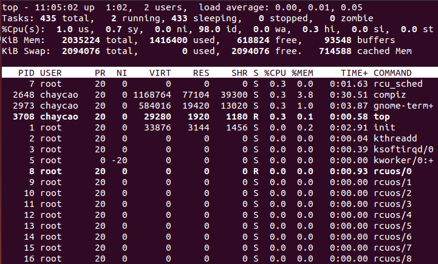

TOP
能够实时显示系统中各个进程的资源占用状况

- 统计信息区（前5行）
- 第一行，任务队列信息，同 uptime 命令的执行结果
- 第二行，Tasks，系统共有435个进程，其中2个在运行，433个在休眠，0个stoped，0个zombie（僵尸）
- 第三行，CPU状态
- us —— 用户空间占用CPU的百分比
- sy —— 内核空间占用CPU的百分比
- ni —— 改变过优先级的进程占用CPU的百分比
- id —— 空间CPU百分比
- wa —— IO等待占用CPU的百分比
- hi ——硬中断占用CPU的百分比
- si —— 软中断占用CPU的百分比
- 第四行，内存状态
- total —— 物理内存总量
- userd —— 使用内存总量
- free —— 空闲内存总量
- buffers —— 缓存内存总量
- 第五行，swap交换分区信息
- 交换区总量
- 使用交换区总量
- 空闲交换区总量
- 缓存交换区总量
备注：
第四行中使用中的内存总量（used）指的是现在系统内核控制的内存数，空闲内存总量（free）是内核还未纳入其管控范围的数量。纳入内核管理的内存不见得都在使用中，还包括过去使用过的现在可以被重复利用的内存，内核并不把这些可被重新使用的内存交还到free中去，因此在linux上free内存会越来越少，但不用为此担心。
如果出于习惯去计算可用内存数，这里有个近似的计算公式：第四行的free + 第四行的buffers + 第五行的cached，按这个公式此台服务器的可用内存
对于内存监控，在top里我们要时刻监控第五行swap交换分区的used，如果这个数值在不断的变化，说明内核在不断进行内存和swap的数据交换，这是真正的内存不够用了。
- 各进程（任务）的状态监控（第七行以下）
- PID — 进程id
- USER — 进程所有者
- PR — 进程优先级
- NI — nice值。负值表示高优先级，正值表示低优先级
- VIRT — 进程使用的虚拟内存总量，单位kb。VIRT=SWAP+RES
- RES — 进程使用的、未被换出的物理内存大小，单位kb。RES=CODE+DATA
- SHR — 共享内存大小，单位kb
- S — 进程状态。D=不可中断的睡眠状态 R=运行 S=睡眠 T=跟踪/停止 Z=僵尸进程
- %CPU — 上次更新到现在的CPU时间占用百分比
- %MEM — 进程使用的物理内存百分比
- TIME+ — 进程使用的CPU时间总计，单位1/100秒
- COMMAND — 进程名称（命令名/命令行）